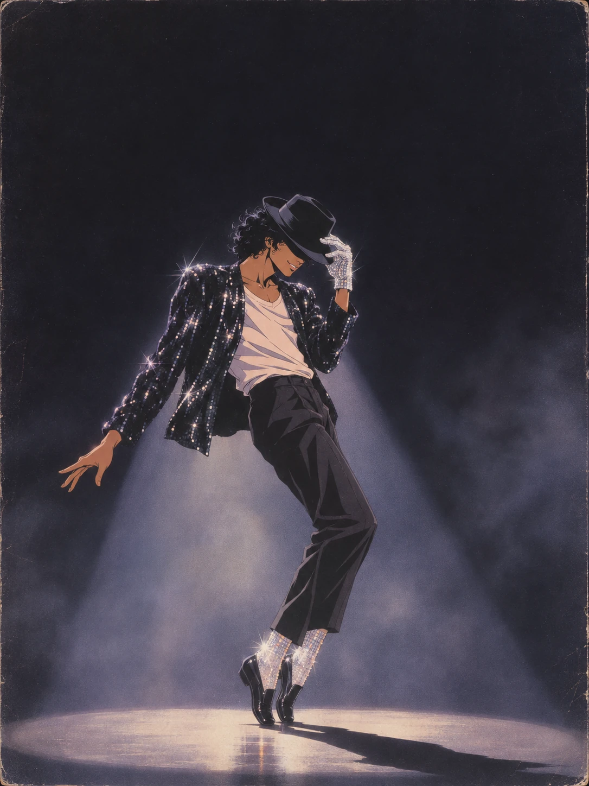
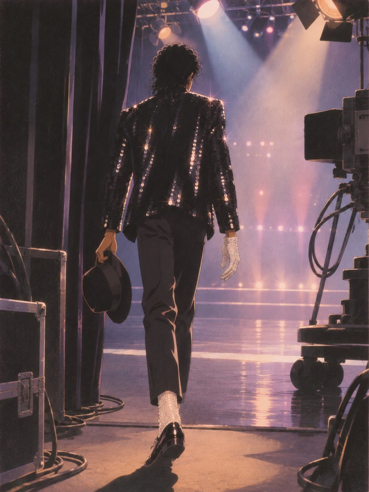
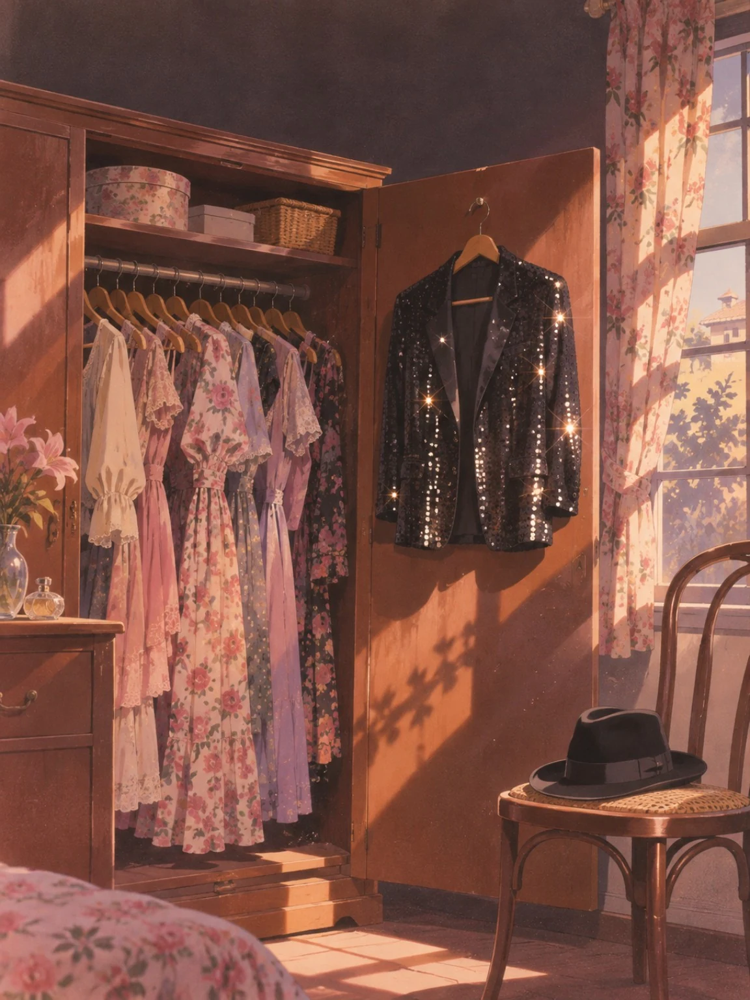
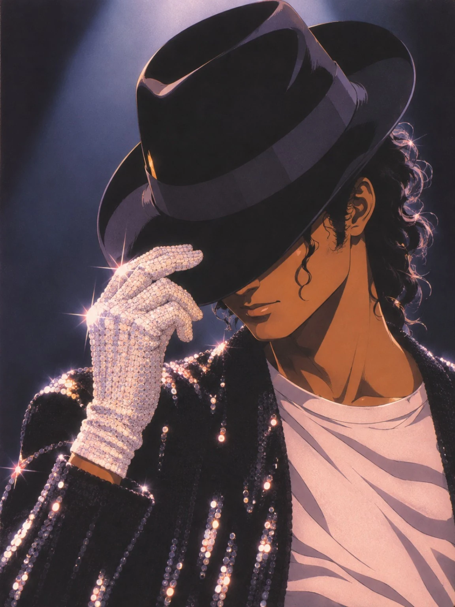
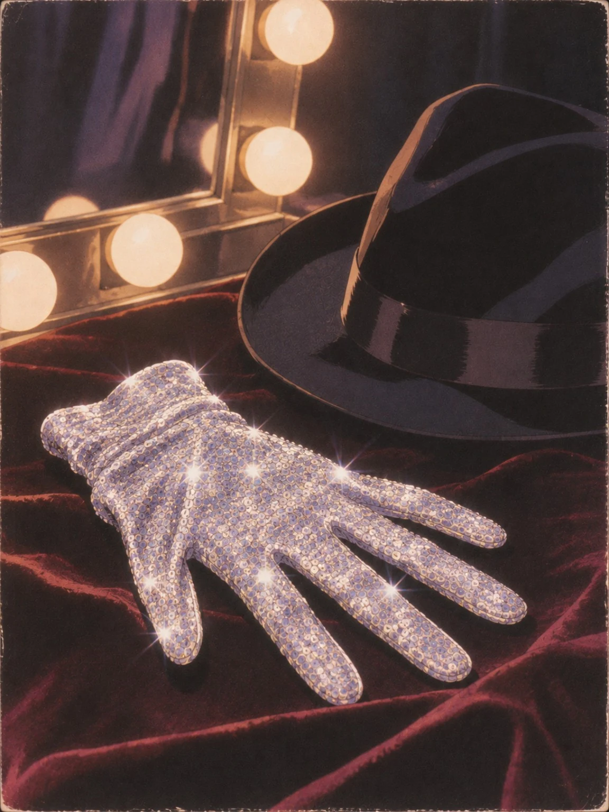
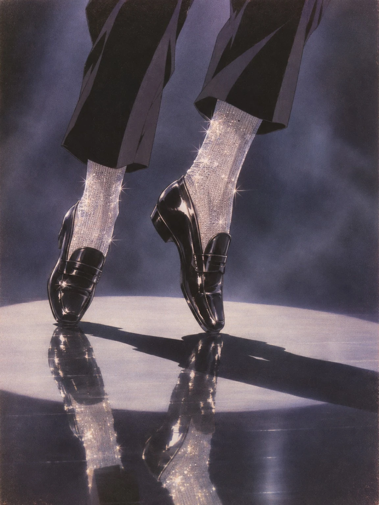
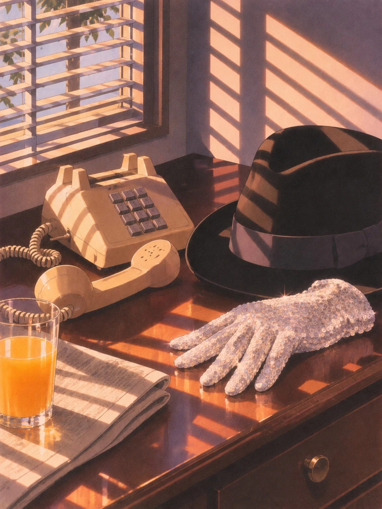

JACKSON
walked backwards

1983년 3월 25일 패서디나ILLUSTRATION
걸은 밤
1983년 3월 25일, 캘리포니아 패서디나 시빅 오디토리엄. 한 음반사의 스물다섯 번째 생일을 축하하는 텔레비전 특집이 녹화되고 있었다. 무대에 오른 가수들은 저마다 옛 히트곡을 불렀다. 한 사람만 빼고.
스물네 살의 마이클 잭슨은 그날 형제들과 메들리를 마친 뒤 혼자 남아 새 노래 〈빌리 진〉을 불렀다. 그리고 간주에서, 앞으로 걷는 듯 뒤로 미끄러졌다. 방송은 두 달 뒤인 5월 16일에 나갔고 5천만 명 가까운 사람이 그 장면을 보았다.
SCÈNE는 그 밤을 옷부터 뜯어보기로 했다. 다만 규칙이 하나 있다. 본인이 하지 않은 말은 한 글자도 싣지 않는다. 그래서 이 인터뷰는 기자가 묻고, 남아 있는 기록이 대답한다. 기록이 엇갈리는 대목에는 「전해지는 이야기」라고 적었다.
그 무대, 하마터면 없을 뻔했다면서요?
기록그렇다. 그날 특집은 옛 히트곡을 돌아보는 자리였다. 그런데 그는 솔로로 새 노래를 부르겠다고 했다. 제작진은 난감했다. 연출자 돈 미셔는 그에게만 신곡을 허락하면 월요일에 다른 가수의 항의 전화를 누가 받느냐고 걱정했다고 회고한다. 결론은 허락이었다. 항의 전화는 연출자 본인이 받기로 했다.
그 반짝이 재킷은 어디서 맞췄습니까?
기록맞춘 옷이 아니다. 형 저메인 잭슨의 회고에 따르면 그는 무엇을 입을지 정하지 못하다가 어머니 캐서린의 옷장으로 갔다. 거기 걸려 있던 검은 스팽글 옷을 보고, 방송에 입고 나가도 되느냐고 물었다고 한다. 세계가 기억하는 그 재킷은 원래 어머니의 옷이었다.
장갑은 왜 한 짝뿐입니까?전해지는 이야기
기록이야기가 둘이다. 하나는 훗날 그의 의상을 맡은 디자이너 마이클 부시가 전한 설명이다. 장갑은 누구나 두 짝을 끼니, 한 짝만 끼어 사람들의 눈을 붙잡겠다는 계산이었다는 것. 다른 하나는 그와 동행했던 존 케헤의 목격담이다. 필름 편집자가 한 손에만 낀 흰 면장갑을 보고 그가 멋지다고 여겼다고 한다. 어느 쪽이든 결과는 같았다. 사람들은 장갑 낀 손만 보게 되었다.

재킷은 여기서 나왔다고 한다THE JACKET

그날 밤의 세 가지THE GLOVE

뒤로 미끄러지는 그 걸음은 직접 만든 겁니까?
기록아니다. 본인도 그렇게 말하지 않았다. 그 걸음은 거리의 춤꾼들에게서 왔다. 그는 1979년 텔레비전 춤 프로그램 《소울 트레인》에 나온 두 춤꾼을 보고 이 동작을 알게 되었다고 전해진다. 자서전에서도 이 걸음을 브레이크 댄스 계열의 스텝이라고 설명했다. 그가 한 일은 발명이 아니었다. 이미 있던 걸음을 5천만 명 앞에 세운 것이다.
검은 구두에 흰 양말이라니, 누가 말리지 않았습니까?
기록계산된 차림이다. 발목 위로 짧게 올린 바지, 흰 양말, 밑창이 부드러운 검은 로퍼는 관객의 눈을 발로 끌어오는 무대의 요령이었다. 프레드 아스테어에게서 배운 수법이라고 한다. 그날 밤 양말에는 스팽글까지 달려 있었다.
방송 다음 날, 전화가 왔다면서요?
기록왔다. 건 사람은 프레드 아스테어였다. 그가 열렬히 좋아하던 춤의 거장이다. 아스테어는 전날 밤 방송을 보고 직접 전화를 걸어 칭찬했다. 그는 훗날 인터뷰에서 그 전화를 자신이 받은 진짜 상이라고 불렀다.
그 밤 이후 무엇이 달라졌습니까?
기록의상이 곧 그 노래가 되었다. 이후 공연에서 이 노래를 부를 때마다 그는 그날 밤을 되풀이했다. 모자를 쓴 첫 자세, 검은 스팽글 재킷, 장갑, 그리고 간주에 나오는 그 걸음까지. 옷 한 벌이 노래 한 곡의 얼굴이 된 드문 경우다.

